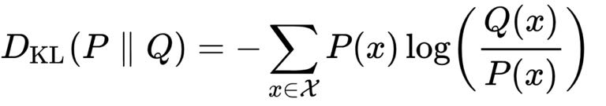

你好，欢迎来到我的《信息论40讲》，这一讲的主题是：交叉熵——如何避免制订出与事实相反的计划？
我们在导论中讲了影响战争结果的三比特信息。也就是前苏联所获取的关于日本战略意图的信息，德军对盟军登陆地点的预判，以及赵括对秦军主将的猜测。
这三比特信息看似不多，作用却很大。
我们在前面也分析了其实作出判断的一方，无论是正确的判断还是错误的判断，得失的程度其实差了非常多。
同样是误判，德国人的损失要比赵括小很多。这一方面是损失的绝对信息量有所不同，另一方面是因为误判的方向所导致的代价函数差异巨大。代价函数有什么用呢？
今天我们就从理论上分析一下误判的代价函数，以防我们万一作出了误判，不会像赵括一样满盘皆输。
我们要介绍的代价函数被称为库尔贝勒交叉熵（K-L divergence也叫KL散度）。从这个名称可以看出，它和熵有关。库尔贝勒交叉熵讨论的是在信息误判时的损失。它的思想是这样的：
我们用X代表一个随机事件，它发生的各种可能性有一个概率分布，我们用P（X）表示，比如说盟军登陆地点的两种可能性是，诺曼底=0.7，加莱=0.3，我们就写成P（X）=（0.7，0.3）。
如果登陆地点的可能性有5个，我们就写成（0.5，0.2, 0.1 ,0.05, 0.15）,分别表示这五个地点的可能性，总之这些概率的和都是1。
当然，由于德军不知道盟军真实的意图，它只能猜，这就有可能出现偏差，我们不妨假设它猜的结果是Q（X），通常Q（X）不会正好等于P（X），比如是（0.3，0.7），正好把两个概率猜反了。
那么这时候它因为信息偏差带来的损失是多少呢？库尔贝勒交叉熵给出了这样一个公式：

我就直接告诉大家计算结果了，也就是如果我们代入前面假定的数字，这个代价函数值= 0.49比特。那么这个代价是大还是小呢？我们换两组数据看一看，对比一下就知道了。
我们再假定在另一个例子中，日本人的战略方向是南下的可能性，即P（X=南下）=0.8，北上的可能性，即P（X=北上）=0.2。
苏军统帅部在得到佐尔格的情报后，也作了完全一样的战略调整，也就是说Q（X）的数值恰好也是（0.8，0.2），那么使用上面公式计算出来的代价函数值=0比特，也就是说当你预测的概率分布和真实情况完全一致时，损失是零。
接下来我们看第三个例子，赵括对秦军主帅的估计。
我们假定秦军主帅是白起和王龁的概率分布是0.95和0.05，假定赵括的猜测是0.05和0.95，正好反过来，那么根据上面的公式，计算出的代价函数值=3.8，这可比德国人的损失大多了。要知道信息的度量是个对数函数，差出1，实际上就差了2倍出去。
当然，在长平之战中赵括的赌性更大，他完全压宝秦国的统帅是王龁，也就是说，他的估计是：王龁当主帅的概率为100%，也就是1，白起的概率为0。
这时赵括错误的代价又是多少呢？代入上面的公式，有一项是用0.95除以0，是无穷大。没错，如果孤注一掷，又猜错了的话就是这个结果！这也就是赵括的悲剧所在。
至于德国，虽然也猜错了，但是他们没有孤注一掷，没有完全从诺曼底撤防，因此损失有限。
从库尔贝勒交叉熵的理论和上面三个实际的例子可以有下面五个更深入的思考。
1.如果你的猜测和真实情况完全一致，你不损失任何东西，但是只要猜测和真实情况不一致，就会或多或少有损失。
2.你的猜测和真实情况相差越大，损失越大。
特别是原来以为的小概率事件发生了，损失最大，那些就是所谓的黑天鹅事件。因此，在战争中，一方常常想方设法把它的真实意图隐藏得非常深。
《史记》中在讲到秦军换将这件事时，写了这样一句话，“（秦）令军中有敢泄武安君将者斩”，意思是说，秦国发布命令，军中有人敢泄露武安君白起来的这件事的人，要被杀头。
在最极限的情况下，该考虑的事情完全不去考虑，最后发生了，损失无穷大。
因此《孙子兵法》就讲，“夫未战而庙算胜者，得算多也；未战而庙算不胜者，得算少也。多算胜，少算不胜，而况于无算乎!”(《孙子兵法·计篇》）
这段话的意思是说，开战之前进行庙算时，充分估量了有利条件和不利条件的，开战之后就往往会取得胜利；开战前没能进行周密庙算的，开战之后就往往会失败，更何况开战之前根本没有“庙算”的呢？战前没有庙算，就相当于把很多可能发生的事情的概率设成了零。
3.自大的人非常容易遗漏很多原本应该考虑的事情，赵括如此，后来的马谡也是如此。
我在《Google方法论》中介绍过英国名将惠灵顿公爵，他在滑铁卢战役中打败了拿破仑，惠灵顿自知自己在军事上比不过拿破仑，甚至比不过当时很多人，因此他每次战役之前就做足准备。
到了近代，大家即使没有学过信息论，已经懂得要作万无一失的防范。因此像德国在防范盟军登陆时，虽然押宝押错了，但是不至于像赵括那样满盘皆输。
4.过分防范各种情况，患得患失，是否有损失呢？
这里的答案也是肯定的。我们假设当时赵国领军的是一位谨小慎微的将军，比如说廉颇，他不仅考虑到了白起来前线的可能性，还把当年率领另一支秦军的主帅司马梗，以及后来接替白起的主帅王陵都考虑进去了。
为了计算简单起见，我们假设赵国主帅将四个人的概率都设为了1/4。根据前面的公式计算，这时的代价函数值=1.73，比赵括的猜测损失小不少，但是也不算太小。因此，如果没有什么根据随意猜测，其实成本是很高的。
当然，如果你要是说，我资源多，是对方的十倍，10%概率能做成一件事，我都付得出别人100%的资源把它办成，那这就如同二战后期美国和日本的武力对比一样，美国实力很强大，赢起来没悬念，那么有没有信息的帮助，关系都不大了，什么事情都可以放到明面上，不需要策略了。但是通常这种绝对优势的情况并不多见。
5.在信息论中，任何硬性的决定（hard decision）都要损失信息。
所谓硬性的决定就是像赵括那样强制将一些可能性设成零，或者像前两年一位声誉很差的创业者动不动呼吁大家“all in”一样。那样的损失可能是巨大的，而且是补不回来的。
今天做人工智能的人都有这样一个经验，在走到最后一步之前，最好多保留一些可能性，哪怕将那些可能性的权重设得非常低，而不要很早就硬性地作决定，因为在硬性决定后失去的信息是永远也补不回来的。
我在谈到教育时，常常讲在本科以前，要进行通识教育，不要在一棵树上吊死，就是要避免过早开始硬性决定。我常常提倡变色龙精神，也是要避免一旦押宝押错了得到不可逆转的灾难。
当然，对于那些可能性不大的事情，在有所防范的同时，不要均匀分配力量，因为这种做法成本也很高，我们在上一条已经分析了。
至于该分配多少资源给那些虽然没有发生，却不能排除可能性的事情，早在上个世纪50年代，图灵的学生古德就提出了一种很实用的方法，被称为古德-图灵估计（Good-Turing Estimate），它的原则是从所有预见到的事情中拿出很少一些资源，分配给没有预见到的事情。
这一讲我们的内容很多，但是都是围绕着量化度量错误预测所要付出的成本进行的。需要你对照文稿多读几遍，当然可能有同学会想，我也记不住库尔贝勒交叉熵这个公式，遇到实际情况该怎么办呢？
其实大家只要记住今天讲的五点原则即可，在平时灵活应用。比如说，我在《硅谷来信》中讲不要过度揣测领导的心思，因为猜对了和猜错了，得失实在不成比例。这用交叉熵就可以实际算出来。希望这些原理对大家有参考意义。
思考题：请你说说自己随机应变把事情做成的经历，以及“all in”做事的经历，回顾一下，看看能否在下次制订计划时，得到新的启发。
下一讲：我会帮助大家回顾整个第一模块“信息产生”。我们下一讲见！